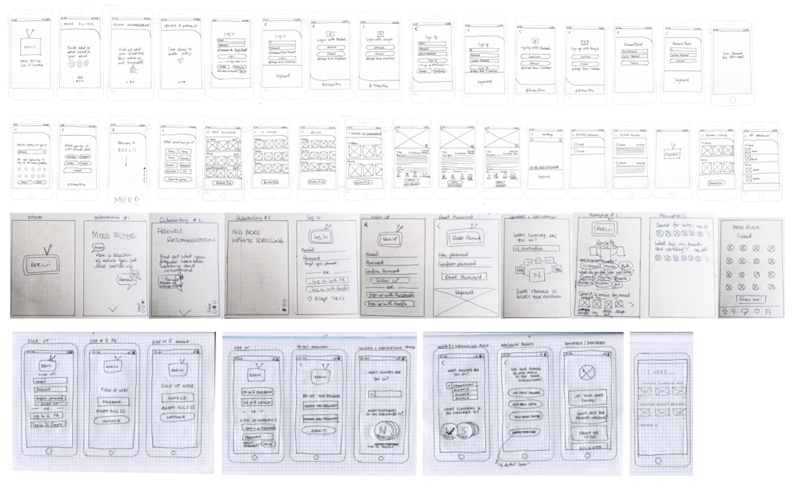
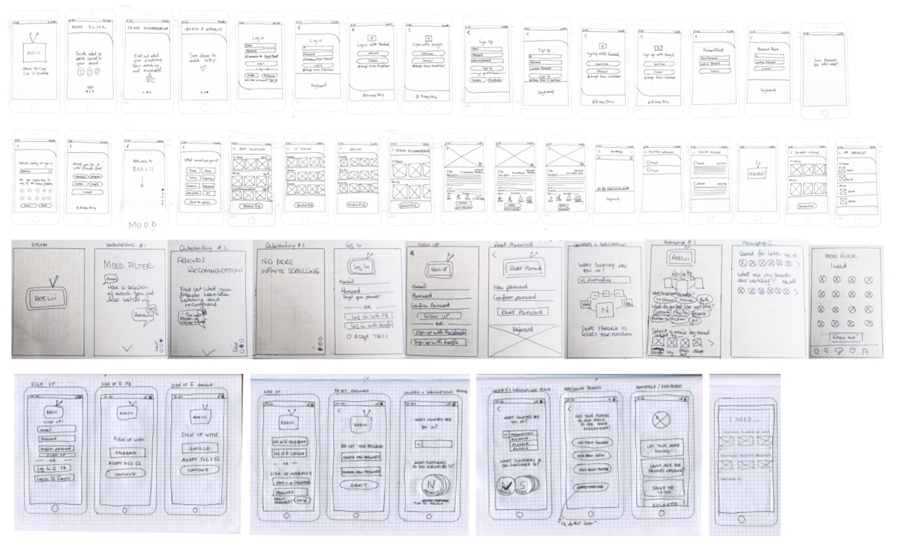

Research, Information Architecture, Wireframing, Prototyping & User Interface
Reelii is an app designed to help users decide on what to watch to make the most of their leisure time
Anita Forte, Cindy Lao, Elanor Tomazi
Miro, Figma, Survey Monkey
Enthusiastic TV watchers with a daily desire for quality viewing need an actionable way to select captivating shows and movies that are user-targeted while streaming on their subscribed platforms. Content options are broad, however it can take watchers a long time to make a decision about what to watch, leading to wasted relaxation time.
‘Reelii’ is developing a mobile app to offer TV streamers recommendations via friend’s sharing and by personal preferences.
User interviews and surveys
Competitor analysis
We began by discussing user viewing habits in 5 user interviews to understand common frustrations with streaming services and how users decide on what to watch. To compliment the user interviews we also conducted an online survey that produced 35 responses. At the prototyping stage we were able to do 8 user tests and iterate based on the feedback which resulted in the final prototype. The user interview plan was developed in order to obtain qualitative insights on current consuming habits, pain points with available apps, and then to further identify opportunities for ‘Reelii’ to solve the user problem. A survey was then published on Facebook and Instagram and reached a total of 35 participants. Questions within the survey were targeted at yielding quantitative data and further supported results gathered from the user interviews. Key findings were as follows:
• 60% of the users use a streaming platform on a daily basis
• 97% use Netflix.
• The vast array of choice on these platforms made it difficult for the users to pick a movie/tv show:
- On average, users would take 10 minutes to decide.
- 74% have given up watching TV after not being able to decide.
- To help them narrow down the options, users would either use the genre filter or ask a friend for a recommendation.
Through our research, we discovered that there are a few direct competitors within the landscape that had developed apps with some similar features to ‘Reelii’.

User Persona
Storyboard
Sketches & Wireframes
Our user research leaded us to the following problem statement:
Our user is a millennial creative who has a busy work life schedule and uses streaming services as a way to enjoy downtime. Because of the nature of her busy lifestyle, maximising her downtime is very important, as she can get lost in the decision making process which can lead to abandoning downtime altogether or result in unsatisfactory choices.
.png)

Making the right choice is the most important factor for users in enjoying their downtime and feeling like they have spent it in a meaningful way. Therefore this was the key feature to prioritize in designing the app.
Once the research insights had been synthesized, we were able to brainstorm potential ideas for the mobile app.
Categorizing these ideas into common themes, and then voting on them allowed us to prioritise the best solutions and features that needed to be incorporated into the platform.
Key features for high impact, and with low complexity are as follows:
• Mood Filter
• See Friend Recommendations
• Personalise filter
• A simple 'Roulette'


User Testing & Iterations
User Flow
A typical user scenario allowed us to fully map out the user flow as below:
 

A Guerilla user test plan was developed and then was run with 5 users initially.
Feedback comments were the following:
• ‘Watched’ button didn’t make sense as the user hadn’t watched the content yet.
• Users queried whether you could stream directly from the app.
• Language used was ambiguous - ‘Save’ and ‘My Watchlist’ used the same icon, and needed better differentiation.
• Login screens weren’t aligned properly, and took users a second to adjust.
• Liked the logo
• Branding was fun!
The user flow was then iterated once again in order to improve the language and overall flow, and we were then able to update the prototype to reflect the iOS Design System.


The research component was critical to providing fundamental insights that were rooted in empathy.
If we were to work on this project again, we would spend some more time user testing and then iterating again and again as needed. The feedback gathered from these tests were incredibly important and gave us a greater connection to our users and how they navigated the system.
User flow habits and trends need to be assessed better in future, as there are certain expectations that people have around this process. We could have saved time iterating if we had done a little more research on that beforehand.